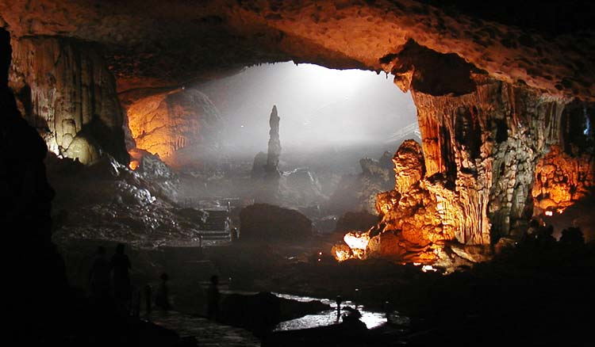
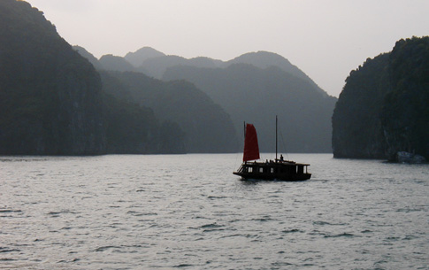
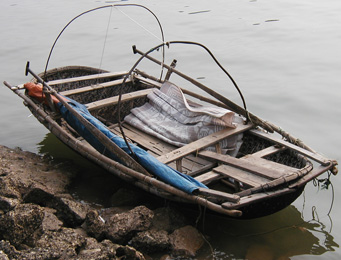
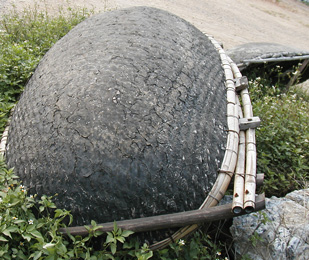
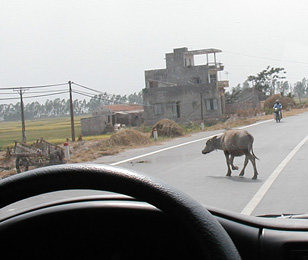
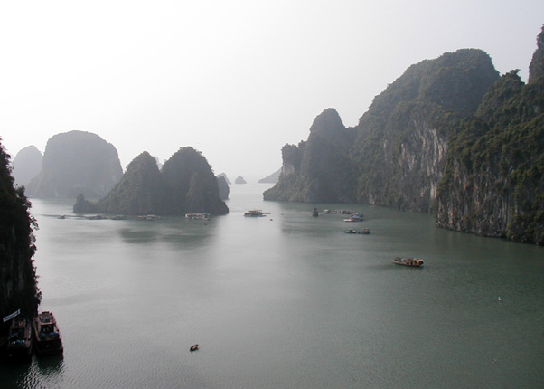
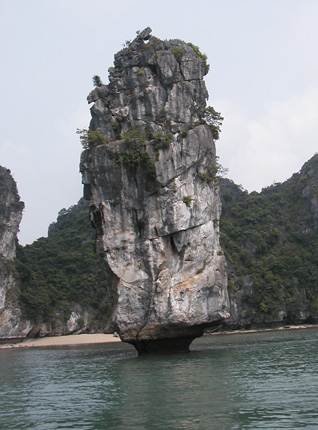
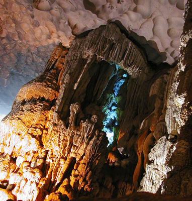
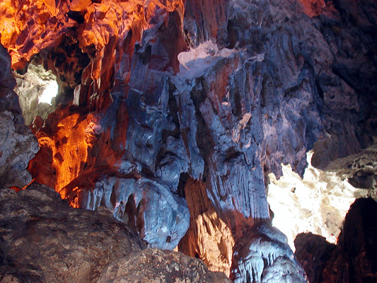

Viet Nam Trav-E-Logs©
| Ha Long Bay
sent 8 July 2003 |
 |
| back: Ha Noi | Sung Sot Cave, one of many in Ha Long Bay |
================================= Just returned from a most enjoyable tour of Ha Long Bay, that picture-perfect place always shown in tour brochures of Ha Noi and Vietnam. Ha Long, located some 170 Km east of Ha Noi, means "Dragon returning to the sea" and the stories told here are similar to those told in the Mekong Delta - just the place names are changed. The tour guide can make or break a trip like this, and ours speaks very slowly, giving explanations and anecdotes as we travel. He gets top rating from the four of us - all that showed up for this trip, usually carrying a maximum of 16. Here is a hodge-podge of thoughts and visions during the two-day tour of the 3000-island area. Haven't been able to plug my laptop into the Internet for quite some time, so many old messages and Trav-E-Logs are waiting to be sent. Will keep trying. Hope everyone is well, and all are enjoying every day. =================================
Jun 3 - 4, 2003
Raelyn from New Zealand. Phach (pronounced "fight") from Ha Noi - means "hero". Kate and Tim from Hamilton, Ontario. Boat people. Huge jelly fish. Caves, lots of caves. Sung Sot Cave - the "Surprise" cave, 7000 square yards. Fantastic photos. Cigar fish. Watched fisherman land 10 Kg tuna. Swim break. Fish farms. Pearl farms. Floating village. Other noisy boats. Diesel smell. Five delicious meals. Big Dipper, almost overhead. Noisy generator. Some sleep in bunks below, others sleep under the few stars brave enough to peek through the haze. No rain for us. Snail collecting at dawn's early light. Cat fish. Cleanest boat I've been on. Many black and brown hawks. Black and white bird, mockingbird sized. Tri-colored heron. Gecko in the night. Swimming and diving off the boat. Cat Ba Island for brief stop. Bye to Raelyn and Phach, hello Ms Hang. Vertical cliffs with undercut bases. Occasional beach. Islands half covered in green trees, ferns and a few palms. Birds heard more than seen. Video clips of floating village. Video clips of shoreline. Red sails in the sunset. Vines on the cliffs. White flowering trees. More swimming. Significant current. New swim pants are great sun-burn protection. Emerald sea. UNESCO World Heritage Site, 1994.
|  |  |  |


Bill
------------------------------
"Travel is Fatal to Bigotry, Prejudice, and Narrow-minded ness" .... attributed to Mark Twain
| next: Sa Pa |
| back: Ha Noi |